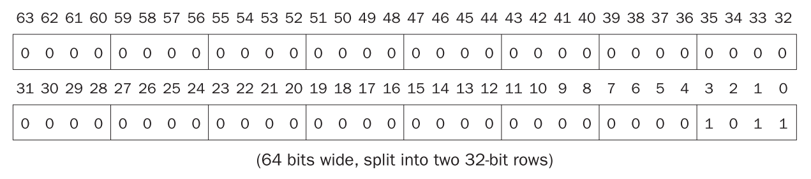
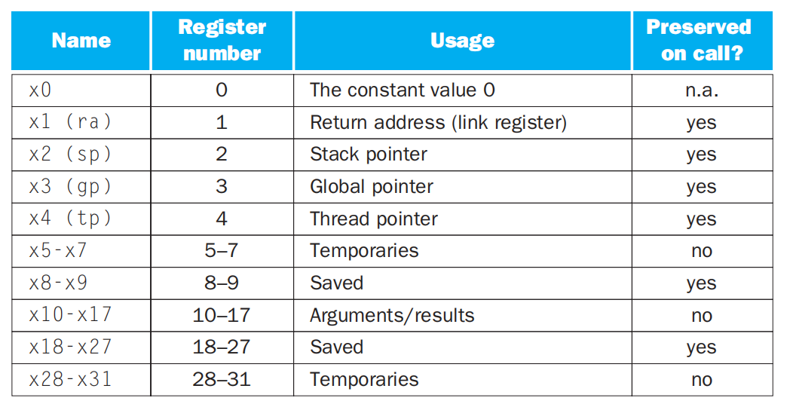
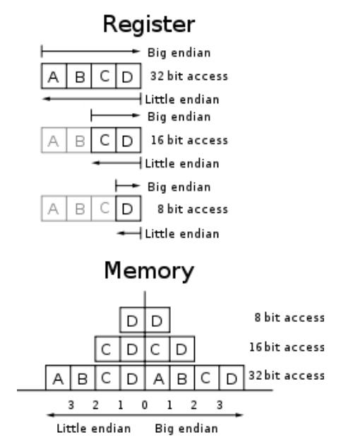
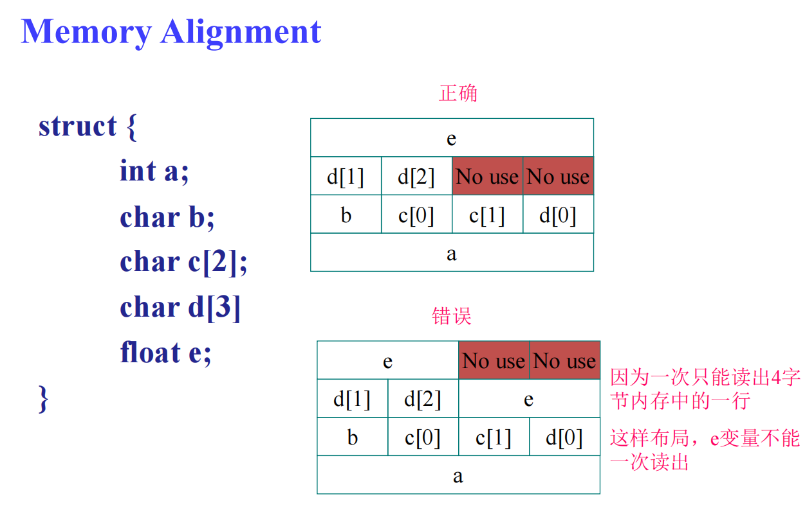
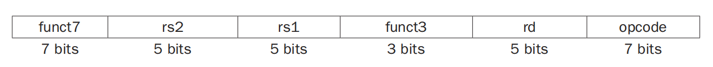
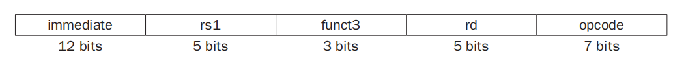
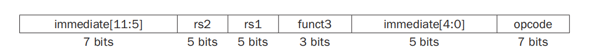
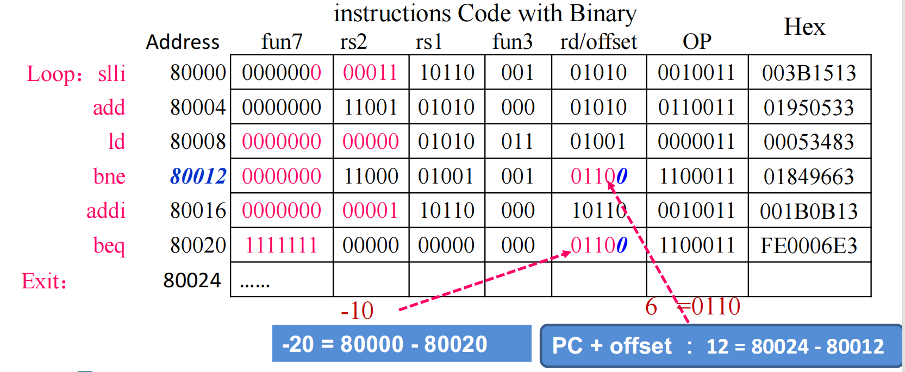
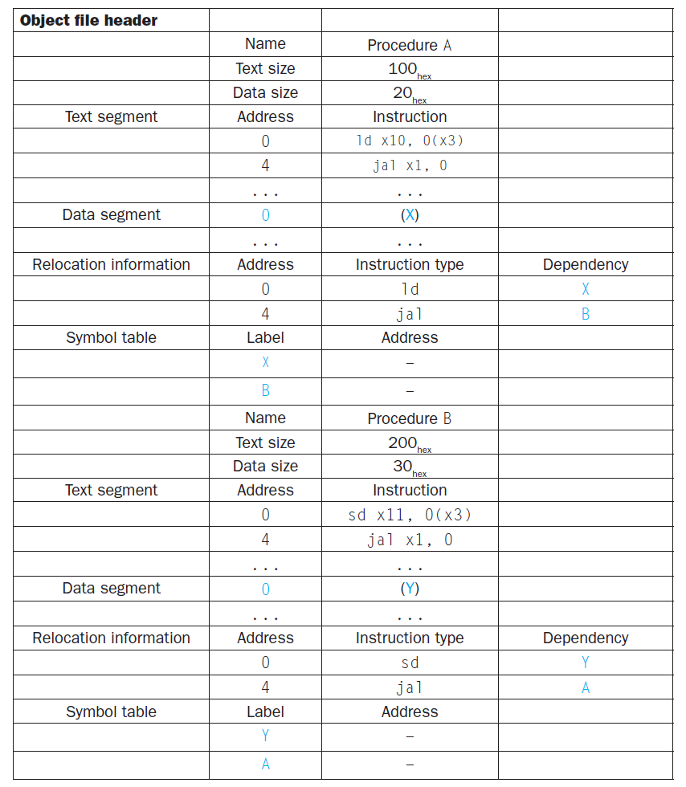

Chap 2: Language of the Machine⚓︎
约 6483 个字 225 行代码 预计阅读时间 35 分钟
Basis⚓︎
指令集(instruction set)：一组能被特定架构理解的指令。
目前比较流行的指令集有 RISC-V、MIPS 和 Intel x86。本笔记主要介绍的是 RISC-V 指令集
存储程序(stored-program) 概念，包含以下两个关键原则：
- 指令用数字表示
- 程序就像数据一样存储在内存中，用来被读取或写入

本章将会介绍的 RISC-V 中各种操作数和指令
在 RISC-V 汇编语言中，用//表示注释，用法与 C++ 的相同。
 设计原则：
设计原则：
- Simplicity favors regularity
- 规整 (regularity) 使实现更简单
- 简约 (simplicity) 保证在较低能耗的情况下获取更高的性能
- Smaller is faster
- Good design demands good compromises
- Make common case fast(from eight great idea)
Registers⚓︎
寄存器(registers)：CPU 内用来暂存指令、数据和地址的内部存储器。在 RISC-V 架构中，一共有 32 个寄存器，且每个寄存器的大小为 64bit。
-
由于 64bit 经常会用到，因此在 RISC-V 中又称为双字(doubleword)（32bit 被称为字(word)
） 。下图展示了双字宽度的值： -
之所以寄存器的个数不多，是因为过多的寄存器会增加电子信号的传播距离，从而导致时钟周期的延长
- 寄存器的命名规则：
xn，其中n为数字，取值范围为0-31 -
每种寄存器的用途：
x0：其值恒为 0
-
将不常用的（或之后用到的）变量放入内存的过程被称为溢出寄存器 (spilling register)
由于寄存器的大小和数量有限，因此对于更复杂的数据结构（比如数组和结构体等
寄存器与内存之间的区别
- 寄存器存储空间小，内存存储空间大
- 各种操作和运算只能在寄存器内完成（因此需要寄存器和内存间的数据传输）
- 寄存器有着更快的运行速度和更高的吞吐量，使得访问寄存器内的数据更加迅速和方便，且访问寄存器的能耗更低（
当然寄存器会更贵一点）
Instructions⚓︎
Arithmetic Operations⚓︎
-
加法
add：寄存器 1 + 寄存器 2
addi(add immediate)：寄存器 + 常量
-
减法
sub：寄存器 1 - 寄存器 2
- 注意：没有
subi，可以通过addi一个负常数
Data Transfer⚓︎
由于对数据的各种操作只能在寄存器内完成，而无法在内存中实现，因此数据需要再寄存器和内存之间来回传递，来完成这一传递操作的指令被称为数据传输指令(data transfer instructions)。要想访问内存中的某个字或双字，我们需要它们的地址(address)，而这样的地址在内存（可以看作一个很大的一维数组）中作为索引使用，从 0 开始。下图展示的是 RISC-V 架构下的内存结构：
- RISC-V 的每个地址对应一个字节，且内存存储的数据是双字宽度的，因此内存地址是 8 的倍数
-
RISC-V 在使用地址时采用小端序(little-endian)：对于一个数据，低位放在小地址，高位放在大地址
补充：小端序 vs 大端序
 -
RISC-V 不要求内存数据对齐 (alignment)
补充：内存对齐

有以下数据传输指令：
-
ld(load doubleword)：加载(load) 指令，将内存的数据拷贝到寄存器内-
格式：
-
内存数据的实际地址 =
mem_base_addr + offset - 符号数的加载会用到符号扩展(sign extension)（若符号位不在最高位上，符号位左侧的位与符号位相等
） ，无符号数的加载会用到零扩展（左侧全是 0） sd(store doubleword)：存储(store) 指令，将寄存器的数据拷贝到内存中- 格式（与
ld基本一致） ：
-
-
lbu(load byte unsigned)：加载 1 字节的数据，并看作无符号数，因此最左侧的位采用零扩展 lb(load byte)：lbu的符号数版本
更多的数据传输指令见“字符串”一节
例题
Logical Operations⚓︎
下表展示了 RISC-V 中关于逻辑运算的指令（同时与 C、Java 对比

-
移位 (shifts)
-
前面两个操作为逻辑左移 / 右移
- 左移 \(i\) 位相当于乘以 \(2^i\)
- 逻辑右移时最左边补 0
- 不带
i的指令表示根据寄存器的值确定移动位数，带i的指令表示用常数确定移动位数，比如：
-
第三种移位操作为算术右移，最左边补符号位
-
-
AND、OR、XOR：与、或、异或，它们的格式一致：
- RISC-V 中没有 NOT 指令，因为它可以通过异或表示出来：任何数与 111...111 异或的结果即为该数取反后的结果
- AND、OR、XOR 也有常数版本的指令，分别为：
andi、ori和xori
Making Decision⚓︎
计算机与计算器的一大不同之处在于计算机具备决策的能力：它能够执行分支（条件）语句、循环语句等。在 RISC-V 汇编语言中，关于决策的指令有以下特征：
- 它们的格式均为（
rs1、rs2是寄存器，L1是标签，inst是指令） ： - 比较的是补码值
- 类型：
- 条件分支(conditional branch)：先检测值，根据检测结果决定是否将控制权转交给新地址上的语句的一类指令
- 无条件分支(unconditional branch)：条件恒为真的条件分支，因此该语句一定会执行
有以下几种可用指令：
beq(branch if equal)：如果寄存器rs1和rs2的值相等，那么跳转至带标签L1的语句bne(branch if not equal)：如果寄存器rs1和rs2的值不相等，那么跳转至带标签L1的语句blt(branch if less than)：如果寄存器rs1的值小于rs2的值，那么跳转至带标签L1的语句bltu：无符号版本
bge(branch if greater than or equal)：如果寄存器rs1的值大于等于rs2的值，那么跳转至带标签L1的语句bgeu：无符号版本
例题
将下列 C 语句转化为 RISC-V 汇编代码：
其中f、g、h、i、j这五个变量分别存储在x19 - x23这五个寄存器内。
对于case/switch语句，我们可以使用一张放有可选指令序列地址的表格（称为分支地址表(branch address table)
例题
基本块 (basic block)
基本块是一个没有内嵌分支（除了在末尾）且没有跳转目标（除非在开头）的指令序列。基本块的概念有以下好处：
- 编译器通过识别出基本块来进行编译的优化
- 高级处理器能够加速基本块的执行
Strings⚓︎
C 语言采用 ASCII 字符集，它规定了一个字符占 8 位或 1 字节的空间。RISC-V 为我们提供了从双字中提取单个字节的指令，便于我们访问字符：
lbu(load byte unsigned)：从内存中加载 1 字节，并把它放在寄存器最右侧的 8 位上sb(store byte)：将寄存器最右端的 8 位写入内存中
例题
C 语言的strcpy()函数的实现如下所示：
void strcpy(char x[], char y[]) {
size_t i;
i = 0;
// copy and test byte
while ((x[i] = y[i]) != '\0')
i += 1;
}
将其转化为 RISC-V 的形式。
strcpy:
// adjust stack for 1 more item
addi sp, sp, -8
// save x19
sd x19, 0(sp)
// i = 0 + 0
add x19, x0, x0
L1:
// address of y[i] in x5
add x5, x19, x11
// x6 = y[i]
lbu x6, 0(x5)
// address of x[i] in x7
add x7, x19, x10
/// x[i] = y[i]
sb x6, 0(x7)
beq x6, x0, L2
// i = i + 1
addi x19, x19, 1
// go to L1
jal x0, L1
L2:
// restore old x19
ld x19, 0(sp)
// pop 1 doubleword off stack
addi sp, sp, 8
// return
jalr x0, 0(x1)
而 Java 采用 Unicode 字符集，它规定了一个字符占 16 位（称为半字(halfword)）的空间。RISC-V 同样也提供了访问半字的一些指令：
lhu(load half unsigned)：从内存中加载半字，并放入寄存器中最右端的 16 位空间内lh(load half)：类似lhu，但会将数据看作一个符号数，因此寄存器左边的 48 位采取符号扩展的填充方式sh(store half)：获取寄存器最右边 16 位的数据并写入内存中
补充
RISC-V 也支持对字的数据传输指令：lwu、lw 和 sw，它们的意义可对应于其他位宽的相似指令，这里不再赘述。
Instruction Representations⚓︎
我们可以把每条指令当作一块块二进制数字构成的组合，而这单块的数字被称为字段(field)。对于一条加法指令add x9, x20, x21，我们可以表示成以下形式：
- 机器语言(machine language)：指令的数字形式
- 机器码(machine code)：一条数字形式的指令
- 如果觉得看这么一长串二进制数字太累了，可以写成十六进制的形式
我们为字段赋予了一些名称，每个字段有不同的功能：
opcode：指令要做的运算，可用这个字段区分各种类型的指令格式(instruction format)funct3：额外的opcode字段funct7：额外的opcode字段rd：寄存器目标操作数，保存运算的结果rs1：第一个寄存器源操作数rs2：第二个寄存器源操作数immediate：立即数，即常数（在 S-type 中会被拆成两半）
有以下几种指令格式：
-
R-type：用于算术运算
 -
I-type：用于加载操作和涉及常数的算术运算
- 由于寄存器的大小为 64 位，也就是说最多移位 64 位，因此移位操作中
immediate字段只有低 6 位存储移位的步数，而高 6 位存储额外的opcode字段（funct6）
- 由于寄存器的大小为 64 位，也就是说最多移位 64 位，因此移位操作中
-
S-type：用于存储操作
 -
U-type：用于与高位常数相关的操作（比如这个）
-
SB-type：用于条件分支指令

- 可表示的地址范围为 -4096-4094，且都是 2 的倍数（因为常数第一位恒为 0）
-
UJ-type：用于无条件分支指令（
jal、 jalr）rd用于存放链接地址（即返回地址）- 如果跳转地址（常数）过大，超过了 20 位，那么可以先用
lui指令（后面会讲到这条指令，也会介绍类似的方法）将高 20 位数字放入临时寄存器中，然后再用jalr指令，跳转到地址剩余的低位数字(临时寄存器)上

总结

可以看到，RISC-V 的指令统一为32 位长度（体现了设计原则 "Simplicity favors regularity"）
Procedures⚓︎
过程(procedure)（或函数
在执行一个过程的时候，程序将会遵循以下步骤：
- 将参数放在过程可以访问得到的地方
- 将控制权转交给过程
- 获取过程所需的存储资源
- 执行目标任务
- 将结果值放在调用程序访问得到的地方
- 将控制权还给原主，因为一个过程可以被调用多次
在调用过程的时候，程序会用到以下寄存器：
x10-x17：8 个用于传递参数或返回值的参数寄存器 (parameter register)x1（或称为ra） ：1 个用于返回原位的返回地址寄存器 (return value register)
此外，程序还会用到过程调用指令 (procedure call instructions)：
-
jal(jump and link)：-
格式：
-
该指令由调用者(caller) 使用：跳转到目标地址（
ProcedureAddress） ，同时也会将后面要执行的指令的地址保存到目标寄存器（x1）中 - 名称中的 link（链接）指的是指向调用位置的地址或链接（称为返回地址(return address)
） ，它能确保过程结束后能够返回到正确的地址上 - 可用于无条件分支中：
jal x0, Label，由于x0 = 0，因此该指令意味着直接跳转至Label所在的语句
-
-
jalr(jump and link register)-
格式：
-
该指令由被调用者(callee) 使用
- 类似
jal，但是跳转到地址0 + address in x1上 - 将寄存器
x0作为目标寄存器（x0不能被改变） - 也可以用于 case/switch 语句中
-
程序计数器(program counter)：一类寄存器，用于保存当前正在执行的指令的地址（更合理的名称是指令地址寄存器 (instruction address register)，但因为历史原因还是习惯叫做前者，简称为 PC
- 在
jal指令中，地址寄存器x1=PC + 4，因为每个地址对应 1 字节空间，而一条指令占 4 字节大小
Stack⚓︎
在过程中，除了会用前面提到的寄存器外，可能还会用到其他的寄存器。需要注意的是：任何被调用者用到的寄存器，在过程被唤起之前必须复原 (restore)（按照我的理解是类似 C 语言的“释放”）它们的值。因此，这里要用到前面提到过的溢出寄存器。
而用于存储这些溢出寄存器的数据结构是栈(stack)：
- 在栈中，需要用一个栈指针(stack pointer) 来指向栈中最近被分配的地址，它起到了指示下一个溢出寄存器的位置，以及获取旧的寄存器的值的作用。RISC-V 中，
x2，或者（更常用）sp作为栈指针。 - 栈的两个常用操作是压入(push) 和弹出(pop)，分别表示存储数据和移除数据。
- 由于历史原因，栈的高位地址在先，低位地址在后，因此要把这个栈看作是一个倒放的容器：栈底在上方，从下方的开口将数据压入


例题
将下面的 C 语言函数改写成 RISC-V 汇编语言的过程
long long int leaf_example(long long int g, long long int h, long long int i, long long int j) {
long long int f;
f = (g + h) - (i + j);
return f;
}
其中，参数变量g、h、i、j对应寄存器x10-x13，f对应x20。
leaf_example:
// adjust stack to make room for 3 items
addi sp, sp, -24
// save register x5, x6 and x20 for use afterwards
sd x5, 16(sp)
sd x6, 8(sp)
sd x20, 0(sp)
// register x5 contains g + h
add x5, x10, x11
// register x6 contains i + j
add x6, x12, x13
// f = x5 - x6, which is (g + h) - (i + j)
sub x20, x5, x6
// returns f(x10 = x20 + 0)
addi x10, x20, 0
// restore register x20, x6 and x5 for caller
ld x20, 0(sp)
ld x6, 8(sp)
ld x5, 16(sp)
// adjust stack to delete 3 items
addi sp, sp, 24
// branch back to calling routine
jalr x0, 0(x1)
图示（分别展示了过程调用前、中、后的时候栈的情况
有些寄存器在调用过程的时候会被自动保存 (preserve) 下来，无需存入栈内。下图便根据这点给寄存器分类：

Nested Procedures⚓︎
叶子过程(leaf procedure)：不调用其他过程的过程。
假设某个程序调用过程 A，过程 A 又调用过程 B。我们知道只有一个寄存器x1用于保存返回的地址，也就是说 A 和 B 需要共用x1，那么过程 B 结束后的返回会影响到过程 A 的返回。
一种解决方案是将需要的寄存器压入栈内保存起来，等到要用的时候再取出来。对于上面的例子，我们可以先将存储 A 的地址的x1先压入栈内，这样保存了 A 的返回地址；然后这个x1可以继续存储 B 的返回地址；等到 A 要返回的时候，x1从栈中获取 A 的返回地址，这样 A 便可以顺利返回了。
例题
将下面用 C 语言写的递归程序（计算阶乘）用 RISC-V 汇编语言改写。
fact:
// adjust stack for 2 items
addi sp, sp, -16
// save the return address
sd x1, 8(sp)
// save the argument n
sd x10, 0(sp)
// x5 = n - 1
addi x5, x10, -1
// if (n - 1) >= 0, go to L1
bge x5, x0, L1
// return 1
addi x10, x0, 1
// pop 2 items off stack
addi sp, sp, 16
// return to caller
jalr x0, 0(x1)
L1:
// n >= 1: argument gets (n - 1)
addi x10, x10, -1
// call fact with (n - 1)
jal x1, fact
// return from jal: move result of fact(n - 1) to x6
addi x6, x10, 0
// restore argument n
ld x10, 0(sp)
// restore the return address
ld x1, 8(sp)
// adjust stack pointer to pop 2 items
addi sp, sp, 16
// return n * fact(n - 1)
mul x10, x10, x6
// return to the caller
jalr x0, 0(x1)
有些递归过程可以被改写成等价的迭代版本，且迭代版的效率会更高。比如对于在过程末尾进行递归调用（即尾调用(tail call)）的过程，在 C 语言中会被自动转化为对应的迭代形式。
例子
对于以下 C 语言函数：
long long int sum(long long int n, long long int acc) {
if (n > 0)
return sum(n - 1, acc + n);
else
return acc;
}
转化为 RISC-V 汇编语言为：
sum:
// go to sum_exit if n <= 0
ble x10, x0, sum_exit
// add n to acc
add x11, x11, x10
// subtract 1 from n
addi x10, x10, -1
// jump to sum
jal x0, sum
sum_exit:
// return value acc
addi x12, x11, 0
// return to caller
jalr x0, 0(x1)
可以看到，在 RISC-V 中该过程会转化为迭代的形式
Space Allocation⚓︎
- 过程帧(procedure frame)/活动记录(activation record)：栈内的一段空间，里面存储了过程所需的寄存器和变量 。
-
寄存器
x8（或者称为fp）是一个帧指针(frame pointer)，它指向过程帧内第一个双字。- 栈指针会随着过程的进行而不断变化，因此在过程的不同阶段访问同一个变量或寄存器时，用到的偏移量会不断变化，从而带来理解上的不便
- 而帧指针在过程中为局部变量提供一个稳定的基址寄存器

-
寄存器
x3（或者称为gp）是一个全局指针(global pointer)，它指向的是静态 (static) 数据。 -
Linux 系统上 RISC-V 的内存分配示意图：

- 最底下的内存是保留的空间（不可访问）
- 第二层的内存用于存放 RISC-V 的机器码，称为文本段(text segment)
- 第三层的内存称为静态数据段(static data segment)，用于放置常数和其他静态变量
- 最上层同时存放栈和动态数据（比如链表等
） ，其中存放动态数据的数据结构称为堆(heap)。注意到栈和堆位于这块内存的两端，分别自顶向下和自底向上增长- C 语言中使用
malloc()在堆中分配空间，使用free()释放堆内的空间。如果过晚释放空间，就会造成内存泄露问题；如果过早释放空间，就会造成悬空指针 (dangling pointers)（类似野指针）问题。
- C 语言中使用
Addressing⚓︎
Wide Immediate Operands⚓︎
虽然在大多数情况下，常数不会很大（\(\le 2^{12}\)lui (load upper immediate) 指令来处理这类较大的常数。
lui的指令格式为 U-type- 它可以加载常数的高 20 位，将其放入寄存器中间的第 12 位到第 31 位，寄存器的低 12 位用 0 填充，高 32 位用第 31 位上的数字填充
- 举个例子：要将 32 位常数赋给寄存器，可以先用
lui指令将高 20 位赋给寄存器，之后用addi指令将剩余的 12 位加到寄存器中（具体见下面的“例题”）
例题

Addressing Mode⚓︎
寻址模式(addressing mode)：决定此架构下的机器语言指令对应的运算数。共有以下四种寻址模式：

- 立即寻址(immediate addressing)：操作数为指令内的常数
- 寄存器寻址(register addressing)：操作数为寄存器
- 基址或偏移寻址(base or displacement addressing)：操作数位于指定的内存位置上，该位置是寄存器和常数之和
-
PC 相对寻址(PC-relative addressing)：分支地址为 PC 和分支偏移量（常数的 2 倍）之和
\[ \begin{align} \text{Target address} & = \text{PC} + \text{Branch offset} \notag \\ & = \text{PC} + \text{immediate} \times 2 \notag \end{align} \]例子
接着 " Making Decision " 一节的例 2，我们将汇编代码展开成机器码表示：
这里有 2 条分支指令：
bne：它的跳转地址为Exit标签位置上（地址为 80024） ，而该指令的地址为 80012，因此偏移量为 80024 - 80012 = 12，常数为 12 / 2 = 6bne：它的跳转地址为Loop标签位置上（地址为 80000） ，而该指令的地址为 80020，因此偏移量为 80000 - 80020 = -20，常数为 -20 / 2 = -10
注意：这里完整的偏移值应该是
fun7和rd/offset字段拼接而成的- 虽然大部分的跳转地址离分支指令都比较近（根据 SPEC 测试，一半左右的分支指令跳转距离不超过 16 条指令
） ，但是仍会存在一些跳转距离很远，超过 12 位地址的指令。这时汇编器会采取以下挽救措施：- 插入一条无条件分支指令，它的跳转地址即为目标跳转地址
- 将原来条件分支指令的条件取反，让条件分支语句自行决定是否跳过无条件分支
Decoding Machine Language⚓︎
如果想将机器语言用 RISC-V 汇编语言翻译，可能需要参考下面这张 RISC-V 指令编码表：
RISC-V 指令编码表

例题
这个机器码对应的汇编指令是什么呢？
\(00578833_{\text{hex}}\)
Synchoronization⚓︎
假设两个处理器 \(P_1, P_2\) 在同一片内存空间中工作，并且它们的工作顺序为：\(P_1\) 写入数据后，\(P_2\) 再读取数据。如果 \(P_1\) 和 \(P_2\) 没有同步(synchoronize) 好，那么就会产生数据竞争(data race) 的问题（结果取决于 \(P_1\) 和 \(P_2\) 的访问顺序，因此这个结果就是不确定的
避免这一问题的方法是原子读取 / 写入 (atomic read/write) 内存操作，这种操作确保读和写之间不会有任何访问这块内存空间的行为。
有些处理器有专门实现原子操作的指令，比如原子交换 (atomic swap/exchange)（实现寄存器和内存数据的交换）等。而 RISC-V 提供了一个指令对 (instruction pair) lr.d和sc.d：
-
lr.d(load-reserved doubleword)：-
格式：
-
功能：将存储在寄存器
rs1的内存地址上的数据加载到寄存器rd上，同时保留这块内存地址，除sc.d的其他指令不应该访问这块地址
-
-
sc.d(store-conditional doubleword)：- 格式：
- 功能：
- 将寄存器
rs1上的数据放入存储在寄存器rs2的内存地址上 - 并且由寄存器
rd指示该指令是否成功：若成功，则rd = 0，否则rd为一个非零值（表示有其他指令访问过这块内存空间）
- 将寄存器
例子
Translating and Starting a Program⚓︎
下图展示了将一个 C 语言的程序（源代码）转化为存储在内存中的一个文件的过程：
这个过程一共涉及到以下装置：
- 编译器 (compiler)：高级编程语言 -> 汇编语言
- 有的编译器兼具汇编器的功能
-
汇编器 (assembler)：
-
伪指令 -> 指令
- 伪指令(pseudoinstruction)：可以理解为汇编指令的扩展（或者缩写
） ，形式上看似指令，而实际上并不存在这种指令，但汇编器会将其自动转化为实际存在的指令
- 伪指令(pseudoinstruction)：可以理解为汇编指令的扩展（或者缩写
-
可接受各种进制的数
- 用符号表(symbol table) 存储标签名称和内存地址的对应关系，便于将标签转化为实际的地址
- 基本的功能：汇编语言 -> 机器码，即汇编程序 -> 目标文件(object file)。在 UNIX 系统中，目标文件包含以下内容：
- 目标文件头 (object file header)：描述目标文件中其他区域的大小和位置
- 文本段 (text segment)：包含机器码
- 静态数据段 (static data segment)：包含程序生命周期中分配的数据（在 UNIX 中这个区域同时存放静态和动态数据）
- 重定位信息 (relocation information)：根据程序被加载至内存的绝对地址来区分指令和数据
- 符号表 (symbol table)
- 调试信息 (debugging information)：简要描述模块的编译情况，使调试器能够将机器指令和 C 源文件关联起来，且能够读取其中的数据结构
-
-
链接器 (linker)
- 对于多文件的编译，采取的做法是先编译、汇编单个的文件，然后将这些机器语言程序链接起来，这样可以尽可能减少重编译和重汇编的情况
- 工作流程：
- 将代码和数据模块以符号化的形式存在内存中
- 弄清数据和指令标志对应的地址
- 补充好内部和外部的引用
- 经链接器加工后，最终生成一个可执行文件 (executable file)，它与目标文件的区别在于后者存在不确定 (unresolved) 的引用
例子
推断下面两个目标文件（给出了目标文件头，以 Name 开头）经链接器链接后得到的可执行文件头是什么？

-
加载器 (loader)：将可执行文件放入内存或磁盘中，工作流程为：
- 读取可执行文件头，得到文本段和数据段的大小
- 创建一个指向足够容纳文本和数据的空间的地址
- 将可执行文件的指令和数据拷贝到内存中
- 将主程序的参数（如果有的话）放入栈中
- 对寄存器进行初始化操作，并将栈指针指向第一个空闲的位置上
- 跳转到启动例程，将参数拷贝到参数寄存器中，并调用程序的主例程。让主例程返回时，启动例程中止整个程序，附带
exit系统调用
Dynamically Linked Libraries⚓︎
前面介绍的链接方法属于静态链接，虽然它能快速调用库函数，但它具有以下缺陷：不能及时更新库函数，会一次性加载所有库函数（即使很多库函数没被用到

Starting a Java Program⚓︎
评论区